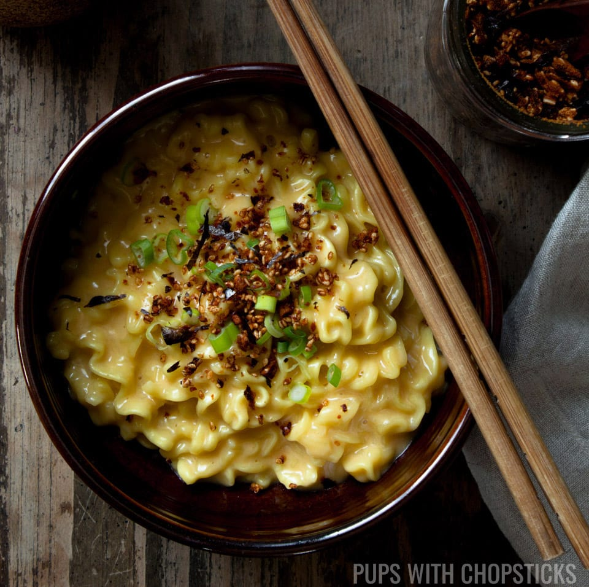

Korean Street Noodles

I don't even know what this is. I think I saw a video one night
on youtube and then maybe 6 months later I attemped to
recreate it from memory to impress my girlfriend.
In all honesty, out of all my repertoire, this is still her favourite. *shrugs shoulders
Try it out. Your lady may also be impressed?
Ingredients
serves 2
250g flat Japanese noodle.
A whole bunch of grated cheese (your choice).
I like to add buffalo mozzarella as well.
1 large portobello mushroom.
3 spring onions.
Double cream.
Salt and pepper.
Mixed herbs.
Directions
- Bring 1 cup of salted water to boil and add noodles.
- Stir noodles and add in thinly sliced spring onions.
- Cut portobello mushroom into large chunks and add.
- When water is soake up by the noodles add in grated cheese and buffalo mozzarella.
- Pour in some double cream.
- Add salt, pepper and mixed herbs to taste.
- Keep stirring until cheese melts. Once melted serve and enjoy
recipes